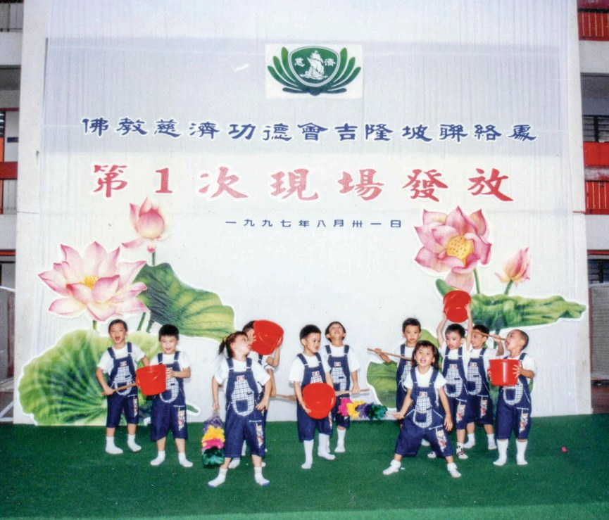
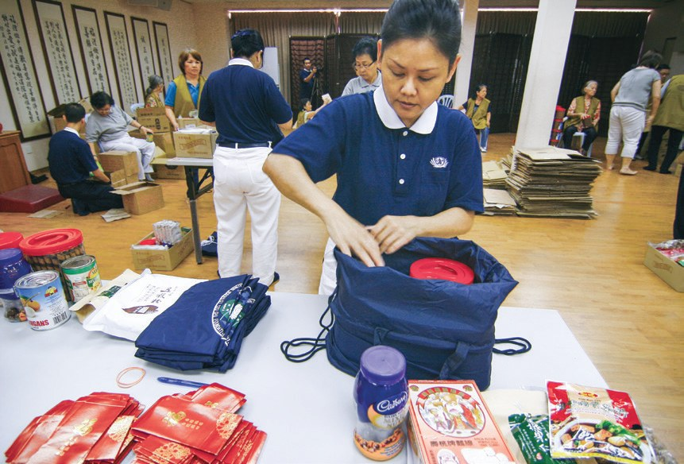
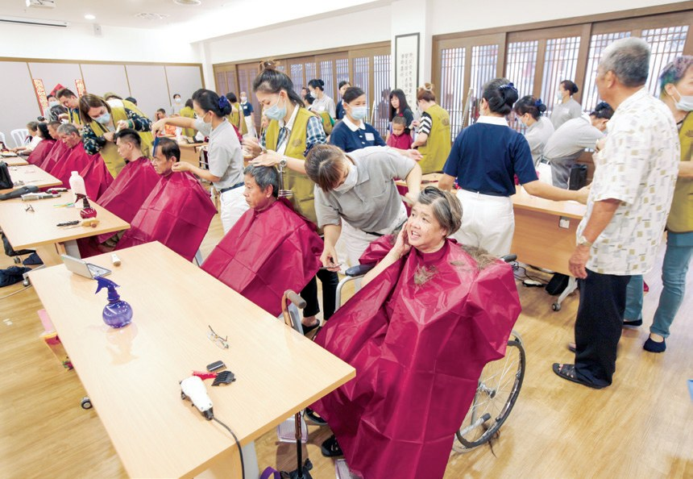
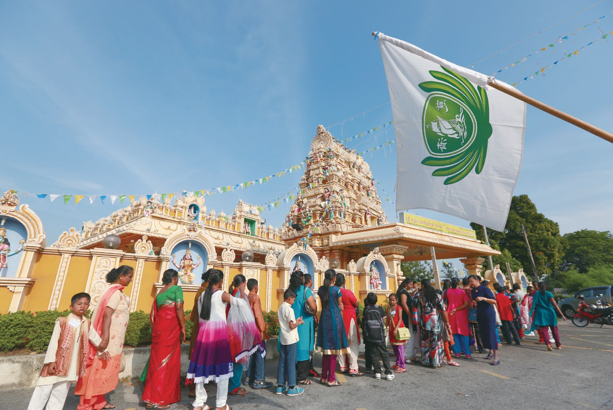
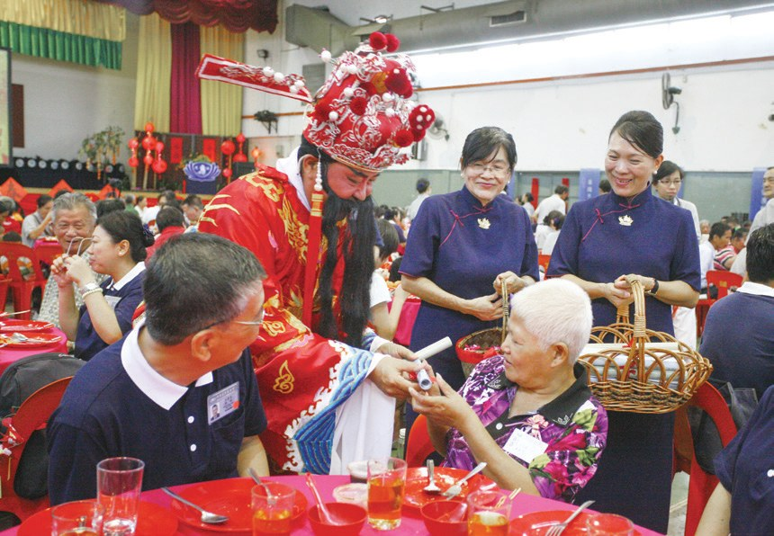
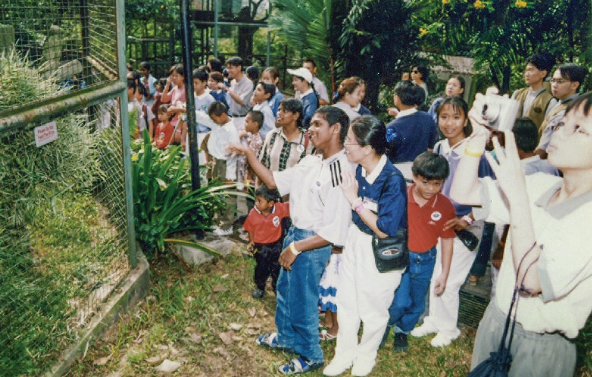
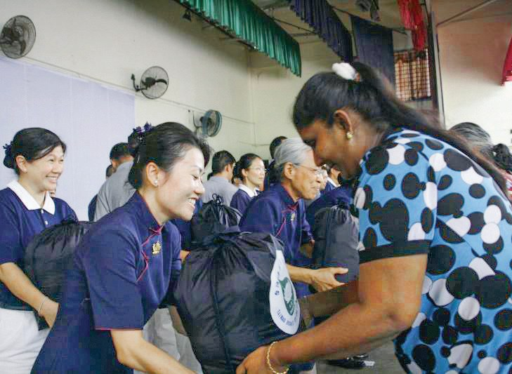

匯聚愛心
布施善種
送東西給有需要的人，怎樣送才算「送得好」？

先別急著下結論，讀完再說說你的想法～
這一篇講慈善發放：從巴生一個學校籃球場開始，到靜思堂裡的新春圍爐，再到印度廟裡的屠妖節。
最後是兩位照顧戶的故事，她們從領禮包，到捧起竹筒。
下面是原書的節錄，紅色底線是我們替你標出的轉折點。
讀之前：你覺得一場發放，最重要的是什麼？
學校籃球場上的相聚
發放從哪裡來？雪隆第一次現場發放在哪裡辦？閱讀引導
至1969年，農曆過年前，慈濟志工蔡秀梅（靜瑩）購置十二條毛毯，捐給精舍師父禦寒保暖。證嚴上人念及照顧戶們更需要這些物資，便決定在首次辦理的冬令發放活動轉贈照顧戶禦寒……

轉送給照顧戶……
為了讓照顧戶能夠走出家門，與人群接觸，志工於1995年7月23日吉隆坡慈濟成立二週年活動時，在巴生試辦現場發放，廣邀照顧戶前來參與活動。
直到1997年，巴生中華獨中校長陳建成獲知慈濟苦尋慈善發放場地，於是出借該校籃球場，並提供兩間宿舍作為義剪及中西醫義診的空間。

- 110位照顧戶出席p.81
- 150名會眾參與p.81
- 120位志工發心付出p.81
「雖然要去巴生很遠，早上五、六點就要起床，但是在那裡大家一起吃飯、唱歌及談天，真的很開心。」
照顧戶林道月表示・p.81
不只是禮包。
把愛心包進去
一個禮包怎樣打包、怎樣送？上人有交代。閱讀引導
「大家要用心，這是一分的尊重，一分的愛，還有一分的惜福，要把愛心包進去。」
早期上人親自教導志工打包物資，並叮寧・p.81
全部包進一個禮包！
送物以禮，敬在誠意；質純其心，儀表人文。
原文・p.82志工列隊整齊，九十度彎腰，雙手平齊捧著禮包交給照顧戶，彼此互道「感恩」；這就是感恩、尊重、愛，希望讓照顧戶能夠感受到慈濟人的用心。

反而先說「感恩」？
從靜思堂到印度廟
發放變成一年一度的新春相聚，也為印裔照顧戶辦屠妖節。閱讀引導
隨著慈濟會務活動頻密，自2005年開始，慈善發放改為一年一度，於農曆歲末期間舉辦，統稱為「歲末發放」。
2014年，吉隆坡靜思堂啟用，志工希望能帶照顧戶「回家」過年，大家歡聚在靜思堂，溫馨的發放活動，一起享用圍爐，如同各地的家人們回家過年。

2020年，新冠病毒疫情肆虐，馬來西亞政府實施行動管制令。……在遵守防疫規範下，志工整理新春禮包及防疫物資，挨家挨戶地送到照顧戶家裡，希望他們可以安心過節。

那就一家一家送上門！
然而，華印兩裔飲食習慣、過年習俗都不同，加上活動節目以華語為主，印裔照護戶較難有參與感，因此在2010年9月開始，雪隆分會另設屠妖節發放，讓印裔照顧戶能在其傳統文化中慶祝節慶。

2014年，發放活動遷至靜思堂舉辦，令印裔照顧戶感到特別的是慈濟人文，讓孩子為父母親「浴足」及「奉茶」。
猜一猜閱讀引導
在印裔社會裡，為父母洗腳浴足，平常只在什麼時候才做？
慈濟作為一個成員多為華人的佛教團體，為印裔族群舉辦印度教傳統慶典並不容易。……每個環節志工都慎重以對，從摸索中學習，年年改進……
幫別人過印度教的節日！
親自坐上輪椅
表演、素宴、義診，還有一次去天后宮的踏青。閱讀引導
志工們為了籌備發放日的表演節目，常常親自登場，雖然不是專業的表演人員，但是大家仍聚在一起重複排練，只希望將最好的成果呈現出來。

烹飪方面，志工為了讓照顧戶享用宴席水準的美食，籌備工作絲毫不馬虎，新年的菜色還添加了創意點心等等，志工們更特地向飯店主廚學習烹飪……

好認真！
2008年1月，志工偕照顧戶走出戶外，在中華氣息濃郁的天后宮舉辦歲末發放及踏青郊遊。此次發放，志工採取一對一的陪伴，八百多位志工讓每一位照顧戶都能獲得妥善的關懷與照顧。
在事前他多次前往天后宮考察路線，更親自坐上輪椅，瞭解坐在輪椅上的不便與顧慮，特別設置了無障礙。

人人下巴士就雙手合十，口中一句句「感恩」，真心感謝志工們貼心的安排，在年節前溫暖了他們的心。
才知道哪裡不方便。
年年回來吃團圓飯
兩位照顧戶，一位捐出百衲被的所得，一位捧著竹筒上菜市場。閱讀引導
林梅影在十多歲時就因為痲瘋病被迫離家，家人將她送到雙溪毛糯痲瘋病院生活。從此她和家人漸行漸遠，不但沒有回過家，也沒有和家人吃過團圓飯……
沒吃過一次團圓飯……
2010年為了籌建靜思堂，慈濟人走入大街小巷募款，林梅影感念慈濟人經常來病院關懷，所以她將售賣百納被的所得，全部捐給慈濟做為靜思堂的建設基金。
「有慈濟這個大家庭，我可以年年回來過年、年年回來吃團圓飯了！」
林梅影在靜思堂的歲末祝福上感恩地說・p.92變成了她的家。
自從羅美萍患病後，親戚朋友害怕會被傳染，不願意再與她往來，平時家裡只有母親照顧她起居，兩人也害怕外人的側目而不敢出門。
隔天羅美萍與母親鼓起勇氣走出家門，帶著竹筒到菜市場募款……看著一枚枚零錢投進竹筒，母女倆心裡充滿喜悅，第一次感受到助人的快樂，發覺自己原來有能力回饋社會。
「我不要這樣躺著給人服侍，我要站起來，要做環保、要投竹筒，我還有很多事情可以做，我有能力付出，就能幫助更多人。」
膝蓋舊疾惡化時，羅美萍心中經常想・p.93投入慈濟所得到的，不只是生活的物資，更多的是心靈的資糧。
原文・p.93停一停：誰讓你記住了？閱讀引導
選一位你印象最深的人。沒有標準答案。
有人出借場地，有人親自試坐輪椅，有人捧起竹筒。哪一位讓你最有感覺？
慈濟點點滴滴的愛，都是長期累積來的。
上人讚歎・p.94
一起回頭看看吧～
回望
依本章原文整理，每一條都標了原書頁碼。閱讀引導
背後原因
為什麼要辦「現場」發放

小川直接送上門不就好了嗎？
- 走出家門
讓照顧戶能夠走出家門，與人群接觸。p.80
- 現場相聚
素宴、節目、義診、義剪，大家一起吃飯、唱歌。p.81
- 感恩尊重愛
九十度彎腰，雙手捧上禮包，互道感恩。p.82
後續發展
發放一路改變

小禾發放從每月一次，變成什麼樣子？
- 1995
巴生試辦現場發放。p.80
- 1997
巴生中華獨中第一次慈善發放。p.81
- 2005
改為一年一度的「歲末發放」。p.82
- 2010
首次為印裔照顧戶舉辦屠妖節發放。p.82、p.85

- 2014
靜思堂啟用，帶照顧戶「回家」過年。p.83
- 2020
疫情下挨家挨戶送禮包。p.83–84
翻轉人生
兩位照顧戶以前和後來
小川她們變了什麼？
- 林梅影：沒和家人吃過團圓飯年年回靜思堂過年p.91–92
- 林梅影：在病院縫百衲被所得全捐給靜思堂p.92
- 羅美萍：怕人側目、不敢出門捧著竹筒上菜市場p.92
- 羅美萍：需要人照顧月存5令吉、做環保p.93
以上只整理本章寫到的事；書裡沒寫到的，我們不替它下結論。
回頭看讀前的選擇閱讀引導
上人叮嚀要「把愛心包進去」（p.81），志工九十度彎腰、雙手捧上禮包（p.82），還一起吃飯、唱歌、踏青（p.81、p.89）。三樣都做到了，你覺得哪一樣照顧戶最記得？
要先向收的人說「感恩」？
只有你自己看得到喔！
準備好了就一起出發～